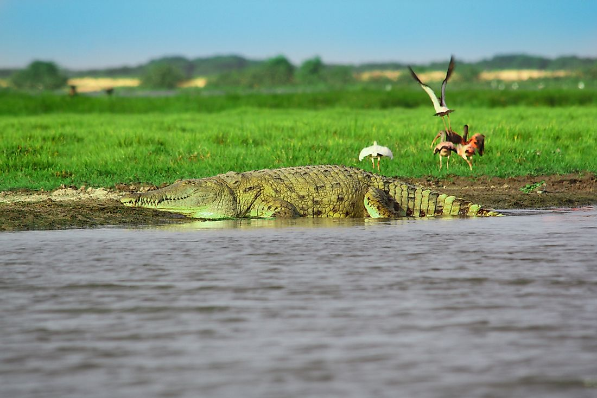
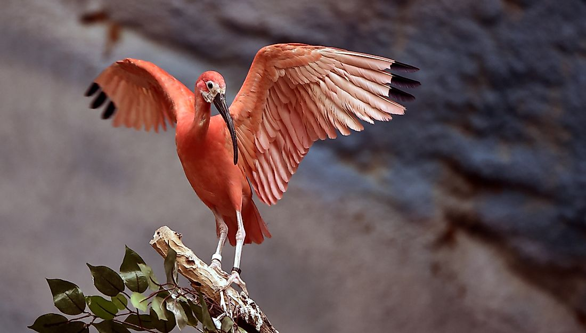
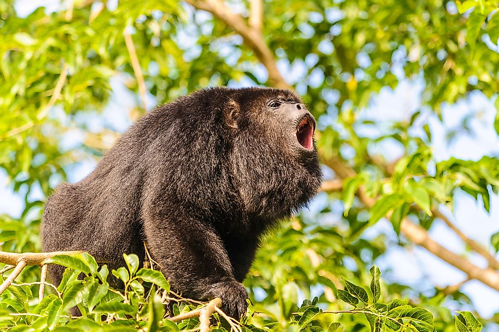
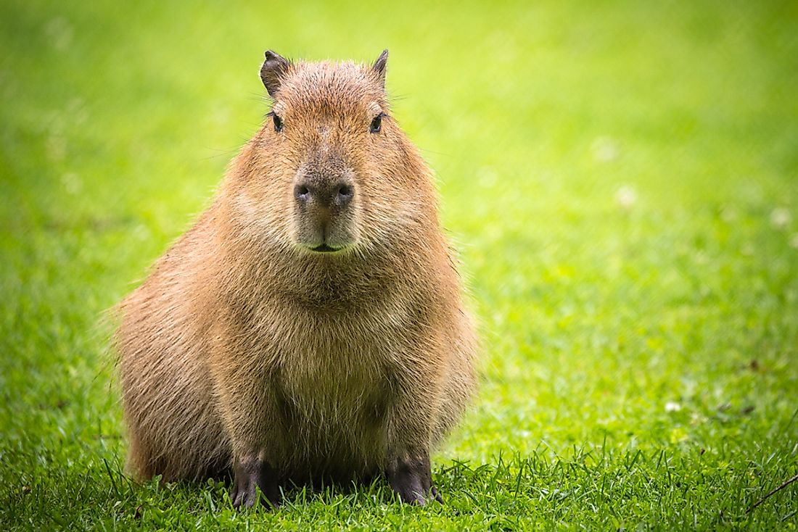
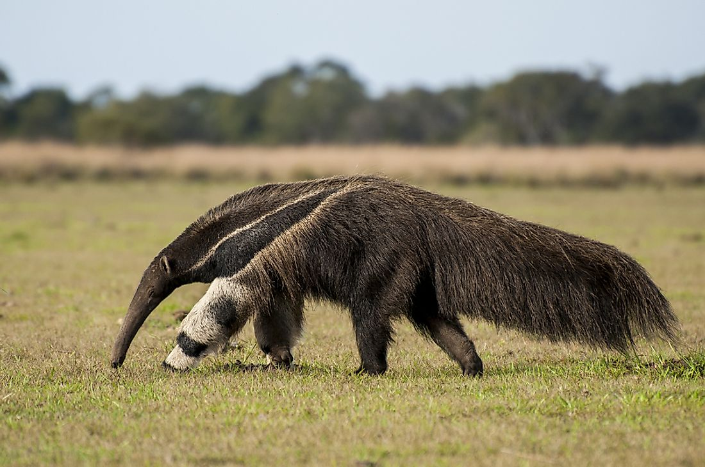
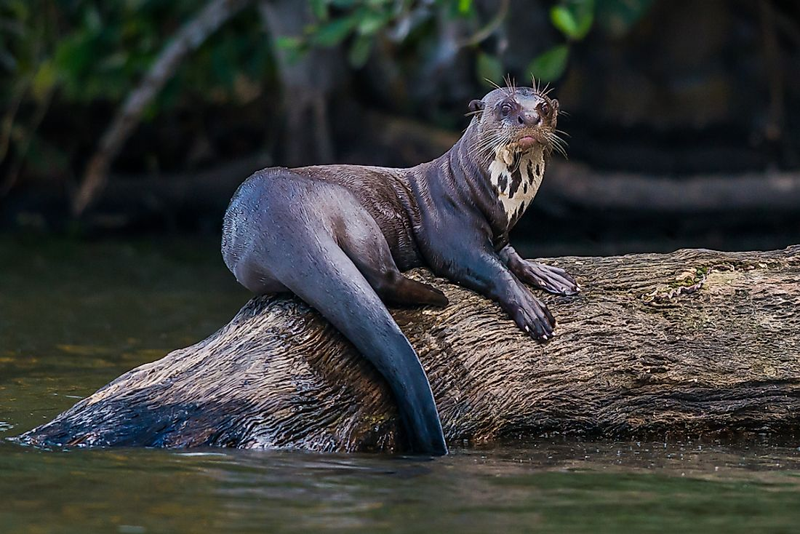
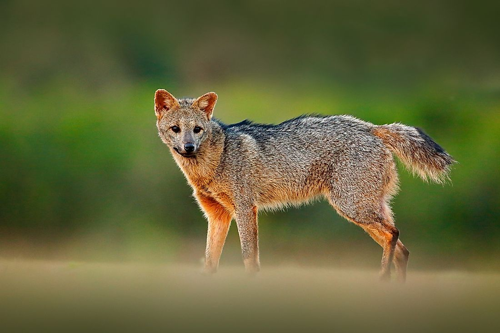
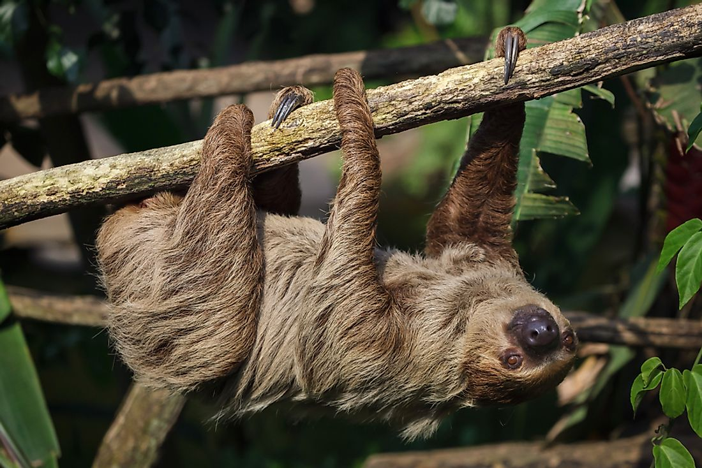
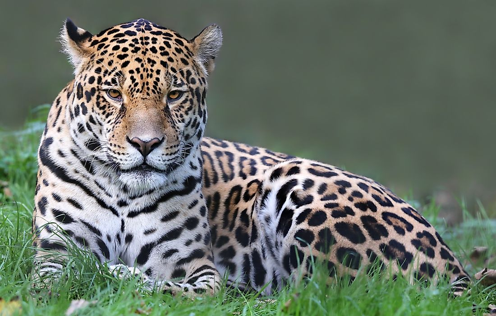

The Orinoco Crocodile derives the name from the habitat of the Orinoco river. The highly endangered reptile is hunted for skin. Orinoco crocodiles can grow to massive length of up to 6.6 meters though currently no such length has been recorded. Weight in males can be up to 635 kilograms and 317 in females. Male are substantially bigger than female. As an apex predator, the Orinoco feeds on smaller reptiles, small mammals and fish. The major characteristic is the long snout and pale tan in color though a few are either yellowish or dark brownish grey. They reproduce during the dry season where the female digs a hole in the sand and lays eggs. The eggs take three months to hatch.
The scarlet ibis is a bird that thrives in a tropical climate. The bird distinguishes itself from other Ibis’ species by their unmistakable scarlet coloration. The feathers of the Scarlet Ibis may have a number of tints and shades but the main coloration is orange-red which is almost luminous. The tip of their long wings is black. The legs are long while the beak is long and blunt. Food is obtained from probing on soft mud for insects and crustaceans. The Scarlet Ibis lives in flocks and can congregate in huge colonies for protection. Breeding is by laying eggs on a loosely built nest of sticks. Incubation takes 19 to 23 day.
Placed in the Atelidae family, howler monkeys are among the biggest mammals in the New World monkeys group. The monkey has a unique anatomy and physiology. Their sense of smell is so strong that it can sense food 2 kilometers away due to sensory hair in the nostrils. The snout is short but wide. The tail is prehensile and long, longer than the body. The total body length can be up to 92 centimeters. Howler monkeys can live for 15 to 20 years. Locomotion is mostly on tree tops and quadrupedally across branches using hands and sometimes the tail. Howler monkeys are highly social and feed on leaves, fruits and nuts
Capybara is a mammal found in Venezuela and the largest rodent species in the world. They reside in dense forests and savannas. They like living near a water body because of their semiaquatic adaptation. The body is barrel-shaped and the head is short. The upper part of its body is covered with thick reddish-brown fur. The lower side has yellowish brown fur. The length of an adult is 3.48 to 4.40 feet while height is 20 to 24 inches. The weight can be a maximum of 66 kilograms though males are heavier than females. The gestation period varies between 130 and 150 days after which a litter of up to eight is born.
Also known as ant bear, these mammals are insectivorous and terrestrial. As the name suggests the anteaters are the largest in the Myrmecophagidae family as they can weigh up to 41 kilograms in males and 39 kilograms in females. Their habitat is the savannas, dry tropical, and rain forests forests. The surface of the tongue has backward curving hooks known as papillae which grab insects using sticky saliva. The tongue runs down to the sternum making feeding easy and fast. The entire body is covered with long, dense fur. Giant Anteaters are territorial in nature. The distinct feature is an elongated snout, long claws, great smelling ability and a very bushy tail. The pelage has a distinctive color. Giant anteaters have a gestation period of around 190 days after which one pup is born.
Also known as giant river otter, the giant otter is the longest member of the weasel or Mustelidae family at 1.7 meters. Carnivorous by nature, the giant otter is territorial and active during the day. Physical appearance is dense velvet fur, webbed feet with sharp claws, wing-shaped tail and a ball-shaped head. Their sensitive whiskers are useful in detecting prey and tracking alterations in water current and pressure. Aquatic adaptation is enhanced by ability to close both the ears and nose while under the water. Giant otters prefer freshwater. Main diet includes fish, turtles, crabs, caiman and other small animals in the riverine ecosystem. Amphibious lifestyle supports its reproduction whereby it gives birth in dens along riverbeds in the dry season. Gestation period is 65 to 70 days. Between one and five pups are born blind
Commonly known as the long-haired or white-fronted spider monkey, the animal is classified as an endangered species. Population levels have decreased due to hunting and loss of habitat. The monkeys feed on mature fruits making them “seeds dispersal agents”. White-bellied spider monkeys reach sexual maturity between 4 and 5 years. The gestation period is 226 to 232 days after which a single offspring is born. The social animals like the fission-fusion way of life. The bigger group can be further fragmented into subgroups which display a lot of fluidity. Locomotion between trees is by jumping and grasping branches with their hairless palms and the tip of the tail

This omnivorous animal derived the name from eating crabs from muddy flood plains. The crab fox can also consume lizards, crustaceans, rodent, insects and even fruits. Crab-eating foxes are found in the woodlands, savannas, riparian forests and the subtropical forests. In Venezuela, they thrive in the southern region. They are also called forest fox, maikong or wood fox. Their appearance is doglike, with short stout legs and a bushy tail. The fur is greyish brown with red patches on the legs and the face. The nocturnal animal hunts individually or in twos. An adult male can weigh between 7.7 and 8 kilograms. The gestation period is 56 days after which a litter of one or two is born.
Sloths derive their name from their low metabolism and slow movement especially on the ground. Sloths are found in tropical rain forests of Venezuela. Their distinctive characteristic is that they spend most of the time hanging on trees. The arboreal mammals can be either two-toed or three-toed. Camouflage from predators is enabled by the shaggy loose far which hosts symbiotic green algae. The algae nourish sloth moths which in turn provide nutrients to the animal. Belonging to order Pilosa, the sloths eat cecropia leaves. The gestation period is six months for 3 toed and twelve months for 2 toed sloths. Only one offspring is born. A sloth can live for 20 years in the wild and 30 years in captivity.
A Jaguar is carnivorous mammal of the cat species where the leopard, tigers and ocelots belongs. The outlook of a jaguar resembles a leopard but it is slightly sturdier and bigger. The skin has a spotted tawny yellowish coat which is spotted with the ventral areas having white patches. Camouflage is possible by the rosettes on its fur which comes hardy during hunting. The average dimensions of an adult are weight of 96 kilograms, length of 6.1 feet and a height of 30 inches at the shoulders. As an apex predator, and at the top of the food chain, a jaguar feeds on other animals. Gestation period is 93 to 105 days after which up to 4 off springs can be brought forth
 Donation
Donation FaceBook
FaceBook